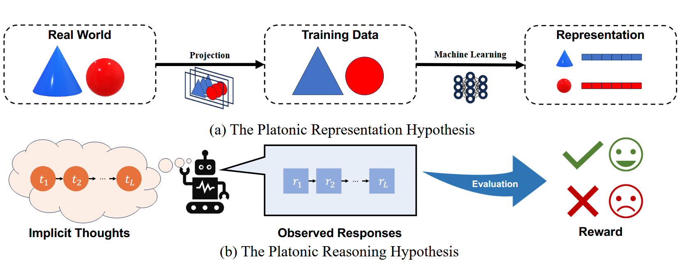

引言
现有的研究已经证实了一件事：随着模型规模和训练数据的增长，LLMs 的表现会不断优化 但随着训练阶段规模的进一步扩大，大模型性能提升的边际收益正逐渐减小。
换句话说，提升大模型性能已经到达瓶颈阶段，我们不能再仅仅通过量变去引起质变，而是需要探索在不增加模型参数量的情况下，如何提升推理的质量。
近年来，引入“慢思考”的概念是一个重要的议题。OpenAI 的 o1 [4]、DeepSeek 的 R1 [5] 以及 Qwen 的 QwQ [6] 等顶尖推理大模型的发布，进一步印证了推理过程的扩展是优化 LLM 逻辑能力的有效路径。研究发现，增加推理时间能够显著提升 LLM 的推理质量 [7]，这一发现推动了对 「慢思考」方法的深入研究。
「慢思考」主要可以分为内部慢思考（Internal Slow-Thinking） 和 外部慢思考（External Slow-Thinking） 两种方式
o1的特点是在响应之前对链进行长时间的思考，这可以通过增加训练时间计算（即强化学习）和延长测试时间计算（例如推理过程中的思考）来提高性能。【论文：Enhancing LLM Reasoning with Reward-guided Tree Search】
首先，得明确这里的“长时间的思考”指的是什么。在机器学习模型，尤其是像语言模型这样的生成模型中，通常推理阶段是即时生成的，每个token都是逐步产生的。而这里的思考指的是模型在生成最终输出前，进行更复杂的处理，比如多次推理、自我验证或者生成多个候选答案再选择最优的。
训练时间的计算增加，指的是在训练阶段使用强化学习（RL）来优化模型。比如，传统的监督微调（SFT）之后，使用RLHF（基于人类反馈的强化学习）来进一步调整模型，让模型生成更符合人类偏好的回答。这需要更多的计算资源和时间，但能提升模型的表现。
测试时间计算的延长，也就是在推理阶段让模型有更多的计算步骤。例如，不是直接生成回答，而是让模型先生成多个可能的答案，进行评估和选择，或者进行链式思考（chain-of-thought），逐步推导出结果。比如，让模型先生成中间步骤，再根据这些步骤得出最终答案，这样虽然推理时间变长，但准确率可能更高。
- 内部慢思考：通过额外的训练，使模型在专门的推理任务上优化参数，提升自身的推理深度和输出质量。【额外的训练指的是训练阶段通过强化学习来优化参数】
Internal slow-thinking involves adjusting model parameters through additional training on specifically designed reasoning tasks, aiming to inherently extend the model’s output length and thereby enhance its reasoning capabilities. 内部慢思考涉及通过对专门设计的推理任务进行额外训练来调整模型参数，旨在固有地延长模型的输出长度，从而增强其推理能力。
- 外部慢思考：不改变模型本身，而是增加计算开销，例如通过多次采样、重新生成答案等方式延长推理过程，从而提高推理的准确性和可靠性。
External slow-thinking focuses on increasing inference costs by introducing additional computational steps, such as re-sampling or re-generating model outputs multiple times (Brown et al., 2024), thereby prolonging inference time and improving reasoning quality. 外部慢思维侧重于通过引入额外的计算步骤来增加推理成本，例如多次重新采样或重新生成模型输出（Brown等人，2024），从而延长推理时间并提高推理质量。
在面对复杂问题时，人类往往会花费额外的时间思考和完善推理的中间过程，以提高准确性。外部慢思考受这一认知过程的启发，通过增加推理步骤来提升大语言模型的推理质量。例如，BoN（Best-of-N）方法会生成多个答案，并通过多数投票或排序等策略选出最优解。此外，更前沿的框架 如思维链（CoT）、思维树（ToT）以及借鉴 AlphaGo 蒙特卡洛树搜索（MCTS） 的方法，能够在树状结构中探索解答空间，寻找更优的答案。
然而，尽管外部慢思考方法展现出提升推理质量的潜力，但仍面临两大核心挑战
- 缺乏理论支撑：目前，我们对这些方法为何有效的理解仍然有限，这阻碍了更先进策略的设计。
- 计算资源需求高：复杂的慢思考技术往往需要大量计算资源，且优化设计参数的难度较大，导致实际应用中的表现不尽如人意。
疑问：为什么外部慢思考能够产生作用？
雪球效应（Snowball Effect）—— 小的变化会随着时间推移不断累积，最终带来显著影响。
在大规模语言模型（LLMs）中，这一效应最初体现在自回归式（Auto-Regressive） 的 Next-Token Prediction（NTP）任务中，微小的 token 级错误会不断累积，最终导致模型生成的答案偏离预期的正确答案。然而，在更复杂的推理任务中，这种错误不再仅限于 token 级，而是扩展到句子级，使得推理偏差更加难以衡量和控制。
为了更直观地理解这一现象，研究者借助柏拉图的「洞穴寓言」（Plato’s Allegory of the Cave）。在这个寓言中，人们只能看到投射在墙上的影子，而无法直接感知真实世界，类似于 LLM 只能从训练数据中学习世界的「投影」。如图，柏拉图关于人工智能洞穴的寓言的两个例子。（a） 模型可访问的训练数据只是墙上的阴影，作为现实世界的投影。（b） 我们观察到的LLM的响应也是墙上的阴影，反映了模型在任务执行过程中的隐含推理思想。

在这个类比中，训练数据只是对现实世界的投影，类似于墙上的阴影，如图1（a）所示。同样，在LLM推理中，生成的响应是阴影，反映了模型的隐式推理过程，如图1（b）所示。
模型的推理输出并非直接反映其思维过程，而是受限于它从训练数据中学到的模式和误差，导致滚雪球效应的持续累积。
需要知道的是，让模型计算一个问题，它会隐式的执行一系列推理步骤：
👉t1——t2——t3——....【推理序列】
而其每一步会相应的产生响应进行输出：
👉r1——r2——r3——...【输出序列】
当时单个r不能完全表达对应的t，其产生的误差会随着推理链的延长而不断累积，最终导致推理结果的严重偏差。
论文【Rethinking External Slow-Thinking: From Snowball Errors to Probability of Correct Reasoning】，提出引入①互信息（Mutual Information, MI）这一数学工具，来量化隐式推理序列 t 与最终生成的回复序列 r 之间的共享信息量，记作 I (t; r)。这一度量帮助评估模型在推理过程中能够保留多少关键信息。②将信息损失定义为互信息 I (t; r) 与隐式推理过程的信息熵 H (t) 之间的差值。
通过研究与实验，该论文得出了一个结论：由于 LLM 生成的随机性，外部慢思考方法的核心目标是引入额外的推理步骤并结合多次重新采样策略，从而对冲雪球误差，进而提高模型生成结果的正确性。
【通过增加推理路径的搜索范围，这些方法提高了生成正确答案的概率，有效减少雪球误差的累积。同时其效果极大依赖于所使用的价值函数的可靠性，这一因素直接影响整个方法的最终表现。】